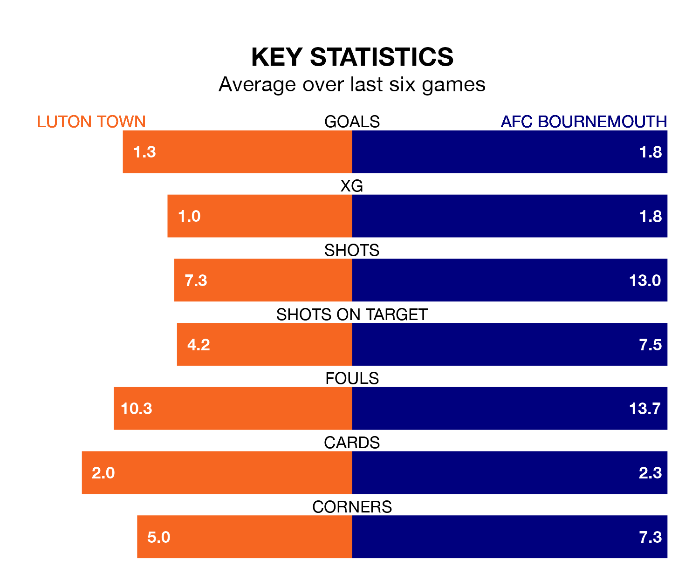

AFC Bournemouth visit Luton Town at Kenilworth Road on Saturday on the back of three consecutive wins in the Premier League.
Bournemouth have picked up 13 points from their last six games, and they face a Hatters side who have lost their last two matches, and collected two points from the last possible 18.
In Dominic Solanke, Bournemouth have one of the league's most on-form strikers so far this season. He has notched 16 goals in 30 appearances, to sit second in the scoring charts.
His goal rate of one every 167 minutes is slightly quicker than that of Elijah Adebayo, Luton's top scorer with a goal every 129 minutes, and a total of nine goals in 23 games.
Town are 18th in the table after 31 games, of which they have won five and drawn seven, earning 22 points.
The Cherries are seven places ahead of the Hatters in 11th, with 11 wins and eight draws putting them on 41 points.
In the last 10 years, Luton and Bournemouth have played each other on six occasions. Luton won two of them, Bournemouth three, and they drew once.
On average, the Hatters scored 1.3 goals and the Cherries 2.0 in those matches.
Their last meeting was on March 13, when Bournemouth won 4-3 at home.
With 43 goals in 31 games so far this season, the hosts are scoring at below the league average rate with 1.4 goals per game. And they are conceding more than average, letting in 64 goals at a rate of 2.1 per game.
The away side are also below average scorers, with 1.5 goals per game, compared to a league average of 1.6. They have conceded 1.8 goals per game.
Luton's last match was on Wednesday, a 2-0 loss against Arsenal.
Bournemouth beat Crystal Palace 1-0 last time out, on Tuesday, with Justin Kluivert on the scoresheet.
Updated: 16:41 (UTC), 04/04/24